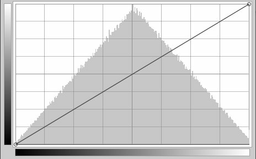
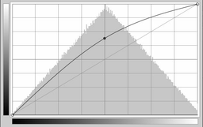

xcalib
Dieser Artikel wurde für die folgenden Ubuntu-Versionen getestet:
Ubuntu 14.04 Trusty Tahr
Zum Verständnis dieses Artikels sind folgende Seiten hilfreich:
Das Kommandozeilenprogramm xcalib  deckt zwei Anwendungsbereiche ab:
deckt zwei Anwendungsbereiche ab:
das Laden von Monitor-Kalibrierungsdaten, genauer gesagt die VCGT-Daten (VideoCard Gamma Tag) aus ICC-Profilen in den X-Server
eine farbliche Anpassung der Bildschirmausgabe durch separate Einstellung von Gammawert, Kontrast und Helligkeit für jeden Farbkanal.
Im folgenden soll die Nutzung von xcalib zur Farbanpassung eines Bildschirms näher erläutert werden.
Einsatzbereich¶
Die Farbanpassung des Bildschirms mit xcalib kann hilfreich sein, wenn eine Anpassung über die Einstellungsmöglichkeiten direkt am Bildschirm nicht ausreichen oder nicht verfügbar sind, wie bei manchen Notebook-Modellen. In diesen Fällen kann mit xcalib die Farbdarstellung systemweit verändert werden.
Abgrenzung zur ausschließlichen Gammakorrektur zum Beispiel durch xgamma¶
Abgesehen von der Eigenschaft als Kalibrierungs-Lader, die in diesem Artikel außen vor bleibt, gibt es einige interessante Unterschiede zum Programm xgamma. Mit xgamma ist es möglich, für jeden Farbkanal separat den Gammawert einzustellen. xcalib deckt diesen Bereich auch ab und erlaubt darüber hinaus für jeden Farbkanal die separate Einstellung von Kontrast und Helligkeit. Die Werte zum Einstellen von Gamma sind zwischen xgamma und xcalib nicht kompatibel. Ein weiterer Unterschied besteht darin, dass jeder Aufruf von xgamma die bisherigen Werte überschreibt, während xcalib seine Anpassung auf der Basis der bisherigen Werte vornimmt.
Nicht alle nötigen Farbkorrekturen lassen sich durch Änderung der Farbgammawerte erreichen. Der Gammawert verändert eine Farbe am stärksten im mittleren Teil ihrer Kontrastkurve. Je näher der Farbwert an weiß oder schwarz liegt, desto weniger wirkt sich die Änderung des Gammawertes darauf aus.
Beispiel:¶
Ein Bildschirm weist einen deutlichen Blaustich auf, der sich vor allem in den hellen Bereichen bemerkbar macht. Mittlere und dunklere Bereiche weisen keinen Blaustich auf. Wird der Gammawert für blau nun so stark verändert, dass der Farbstich in den hellen Bereichen nicht mehr vorhanden ist, handelt man sich damit einen deutlichen Gelbstich in den mittleren Helligkeiten ein. Ohne zusätzlich Einfluss auf Helligkeit und Kontrast des Blaukanals zu haben, lässt sich der Farbstich nicht korrigieren.
Installation¶
Folgendes Paket muss aus den Paketquellen installiert [1] werden:
xcalib (universe)
 mit apturl
mit apturl
Paketliste zum Kopieren:
sudo apt-get install xcalib
sudo aptitude install xcalib
Bedienung¶
Farbkorrektur¶
xcalib wird in einem Terminal [3] gestartet. Zur Farbkorrektur dient folgende Syntax:
xcalib -red GAMMA HELLIGKEIT KONTRAST -green GAMMA HELLIGKEIT KONTRAST -blue GAMMA HELLIGKEIT KONTRAST -alter
Mit obiger Befehlszeile können gleichzeitig für jede Farbe der Gammawert, die Helligkeit und der Kontrast verändert werden. Folgende Möglichkeiten hat man dabei:
Regelbereich¶
Gamma¶
GAMMA - Der Wert 1 lässt den Gammawert unverändert, Werte kleiner als 1 führen zu einem niedrigeren Gamma-Wert als vorher, stellen die Farbe also subjektiv heller ein, Werte größer als 1 erhöhen den Gammawert, lassen die Farbe also dunkler wirken. xcalib akzeptiert zwar hier auch negative Eingaben, dies führt aber zu allenfalls psychedelischen Erlebnissen. Beim Herumspielen mit dem Gammawert kann es vorkommen, dass dadurch die Kontrastkurve im Ergebnis nicht mehr monoton ist. Aus einem Verlauf von Schwarz nach Weiß wird bei einer nicht monotonen Kontrastkurve einer, der zuerst nach weiß läuft und dann wieder dunkler wird. Dies geschieht aber nur bei sehr extremen Werten. xcalib gibt in diesen Fällen eine Warnung aus. Im folgenden Beispiel wird darauf hingewiesen, dass die Kontrastkurve für Grün nicht mehr monoton ist:
Warning - green gamma table not monotonic
Helligkeit¶
HELLIGKEIT - Der Wert für Helligkeit wird in Prozent der Helligkeitszunahme eingegeben. Erlaubt sind Werte zwischen 0.0 und 99.0 - Der Wert 0 lässt die Helligkeit unverändert, Werte größer als 0 steigern die Helligkeit der jeweiligen Farbe um den angegebenen Prozentsatz. Die Helligkeit einer Farbe lässt sich also mit xcalib erhöhen, aber nicht verringern.
Kontrast¶
KONTRAST - Der Wert für Kontrast wird in Prozent eingegeben. Erlaubt sind Werte zwischen 1.0 und 100.0 - Der Wert 100 lässt den Kontrast unverändert (100% des ursprünglichen Kontrastes). Werte kleiner als 100 setzen den Kontrast auf den angegebenen Prozentsatz des ursprünglichen Kontrastwertes herunter. Der Wert 80 verringert den Kontrast also auf 80% des Ausgangswertes. Mit xcalib lässt sich der Kontrast einer Farbe also nur senken, nicht erhöhen.
Hinweis:
Zu beachten ist, dass xcalib mit jedem Aufruf eine Veränderung der bisher eingestellten Werte vornimmt. Es werden also keine absoluten Angaben gemacht, sondern vielmehr sind die Anweisungen bezogen auf die bisher gültigen Farbeinstellungen. Führt man einen xcalib-Befehl mit Änderungen bei den Farben mehrfach hintereinander aus, so wird dadurch die Änderung immer wieder neu auf Basis aller bisherigen angewendet. Um dies zu vermeiden und zur Original-Bildschirmausgabe zu kommen, muss die Farbkorrektur also zurückgesetzt werden (siehe unten).
Beispiele¶
Um sich besser vorstellen zu können, was durch die verschiedenen Einstellungen bei Gamma-, Helligkeits- und Kontrastwert eigentlich geschieht, kann es helfen, sich klar zu machen, welche Änderung in der Kontrastkurve von GIMP dieser Einstellung entspricht.
|  | |
| Ausgangswert | |
| Verringerter Kontrast | Erhöhte Helligkeit |
|  | |
| Erhöhter Gamma-Wert | Verringerter Gamma-Wert |
Weitere Optionen¶
Globale Änderung der Kontrastkurve¶
Gammawert, Helligkeit und Kontrast können in den oben genannten Einstellungsbereichen auch global, also für alle Farbkanäle gleichzeitig geändert werden. Dies kann man natürlich auch dadurch erreichen, dass man bei den Optionen für alle drei Farben die gleichen Werte einsetzt. Einfacher geschieht es aber durch die folgenden Befehle:
xcalib -gc GAMMA -alter
verändern den Gammawert global.
Die Helligkeit steigert man global mit:
xcalib -b HELLIGKEIT -alter
Den Kontrast senkt man global mit:
xcalib -co KONTRAST -alter
Auch bei den globalen Änderungen gelten die im Abschnitt #Regelbereich gemachten Bemerkungen.
Mehrere Bildschirme¶
Um bei Verwendung mehrerer Xserver oder Bildschirme einen bestimmten anzusprechen, dienen die folgenden Parameter:
-d, -display host:dpy -s, -screen screen-#
Risiken und Nebenwirkungen¶
Farbtiefe¶
Die Anwendung von xcalib reduziert die Farbtiefe. Wie stark dies in der aktuellen Einstellung geschieht, lässt sich prüfen mit:
xcalib -l -alter
Eine Ausgabe könnte zum Beispiel so aussehen:
Resolution loss for 256 entries: R: 17 G: 11 B: 32 colors lost
Rot hat demnach noch 256-17= 239 Tönungen, Grün noch 245 und Blau noch 224.
Anzeige unlesbar geworden¶
Natürlich kann man beim Herumspielen mit den Optionen auch mal den Bildschirm unlesbar machen, indem man die Helligkeit aufs Maximum regelt oder den Kontrast ganz nach unten. Vielleicht erinnert man sich dann noch daran, dass xcalib -c alle Werte zurücksetzt und tippt den Befehl dann schnell im Blindflug.
 - kurzer Grundlagenartikel
- kurzer Grundlagenartikel- Erstellt mit Inyoka
-
 2004 – 2017 ubuntuusers.de • Einige Rechte vorbehalten
2004 – 2017 ubuntuusers.de • Einige Rechte vorbehalten
Lizenz • Kontakt • Datenschutz • Impressum • Serverstatus -
Serverhousing gespendet von